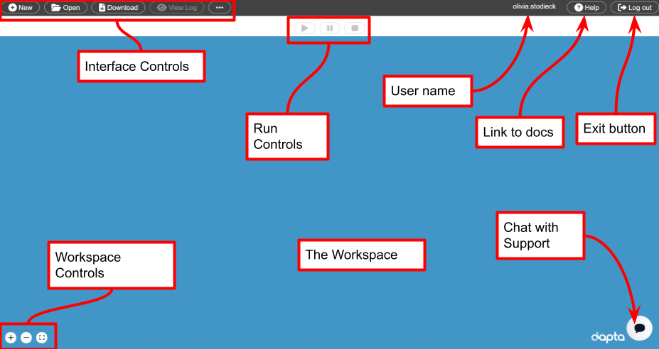

The dashboard
Contents
The dashboard#
The dashboard is a graphical web interface that allows user to create, edit, execute and inspect the outputs of an analysis Run. To access your dashboard, open a web browser and navigate to https://www.dapta.com. Then log in with your user credentials and click on the ‘Dashboard’ button that has appeared in the main website menu.
{kind=link}
Interface controls#
New : Reset the workspace. Also use this to delete your session from the Cloud after completing a Run.
Open : Open a saved workspace session by uploading a JSON-formatted session definition file.
Download : Download a JSON-formatted version of your current session and the Run Log (if available).
View Log : View the current Run Log (if available).
… : View menu of secondary controls, useful links and new features.
The workspace#
The workspace provides a visual representation of the Components and Connections currently defined in your session.
Right-click in the workspace to open a workspace context menu. Select the ‘Add Empty Node’ option to add an empty template Component to the session.
Left-click Components or Connections to edit or delete them.
Left-click and hold to drag Components or Connections across the workspace.
Scroll to zoom-in or out.
Select the workspace controls + and - to zoom in and out, or the ◻ to fit all Components into the current view.
Components#
Components are defined as calculation blocks that appear as boxes in the workspace. Select a Component to edit it.
Each Component has a name that is displayed at the top of the Component box in the workspace view. A symbol appearing next to the name indicates the validity status of the Component:
? : Pending : Some inputs are missing.
üó∏ : Valid : All necessary inputs have been defined.
! : Invalid : Some inputs are erroneous.
Connections#
A Connection is defined as a data link from an origin Component output handle (right side handle) to a target Component input handle (left side handle). There are three types of Connections:
Design variable connection : transfer design variable values (numbers or arrays of numbers only) between Components. They appear as black arrows in the workspace view. Updated variables are transferred after every origin Component calculation iteration. This is the default Connection type.
Implicit variable or file connection : transfer implicit variables (any JSON serialisable object) or files between Components. They appear as green arrows in the workspace view. Updated variables are transferred after every origin Component calculation iteration. This is the default Connection type for file Connections.
Setup variable or file connection : transfer setup variables (any JSON serialisable object) or files between Components. They appear as blue arrows in the workspace view. Updated variables are transferred only once after all Components completed setup and before the first compute of the connection target Component.
The data transferred through Connections has to be a JSON serialisable python object (this includes most python data types) or a file reference. File reference keys start with the prefix “files.” .
Valid Connections#
The compute functions will always be executed in order from a single ‘Start Node’ to a single ‘End Node’. This means that a ‘Start Node’ may not have any incoming connections, and an ‘End Node’ may not have any outgoing connections. Driver components cannot have any connections.
Run Controls#
▶ / Play: Launch a new Run. This option only becomes available once all Components are valid.
⏸ / Pause : Pause a Run. This option only becomes available once a Run has been started. Execution can be continued by selecting the play ▶ button.
⏹ / Stop: Stop a Run. This option only becomes available once a Run has been started. This terminates the current Run and may result in an error message.